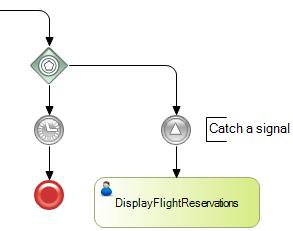

Event-Based Exclusive Gateways represent an alternative branching point where the decision is based on two or more Events that might occur, rather than data-oriented conditions (as in an Exclusive-Gateway). SymbolDescriptionAs with the other gateways, the Event-Based Exclusive Gateway allows you to control when a process diverges or converges. The Event Gateway is unique in BPMN in that its normal behavior is actually determined by a combination of flow objects. The gateway by itself is not sufficient to accomplish the exclusive splitting of the flow. It uses a combination of Intermediate Events to create the behavior. These Events, which must be of the catch variety, are the first objects connected by the Gateway's outgoing Sequence flows (as details the example below). The valid catch Intermediate Events are: Message, Timer, Conditional, Signal. Since all the Intermediate Events are catch Events, the process will wait until one of the Events is triggered. The Intermediate Events that are part of the Gateway configuration become involved in a race condition. Whichever one finishes first (fires) will win the race and take control of the Process; the other events are discarded. The merging behavior of the Event Gateway is exactly the same as the merging behavior of the Exclusive Gateway. Properties
ExampleIn the following example, the Event Gateway receives the process flow which will wait for the triggering of a signal (to execute DisplayFlightReservations) or will wait for a Timer to end the Process.  ScopeObjects: Business Process Diagram See AlsoExclusive Gateway
|
| Backlinks | ||
| Category:BPD Gateways | Exclusive Gateway | Toc:GeneXus BPM Suite |
| Inclusive Gateway | Parallel Gateway |